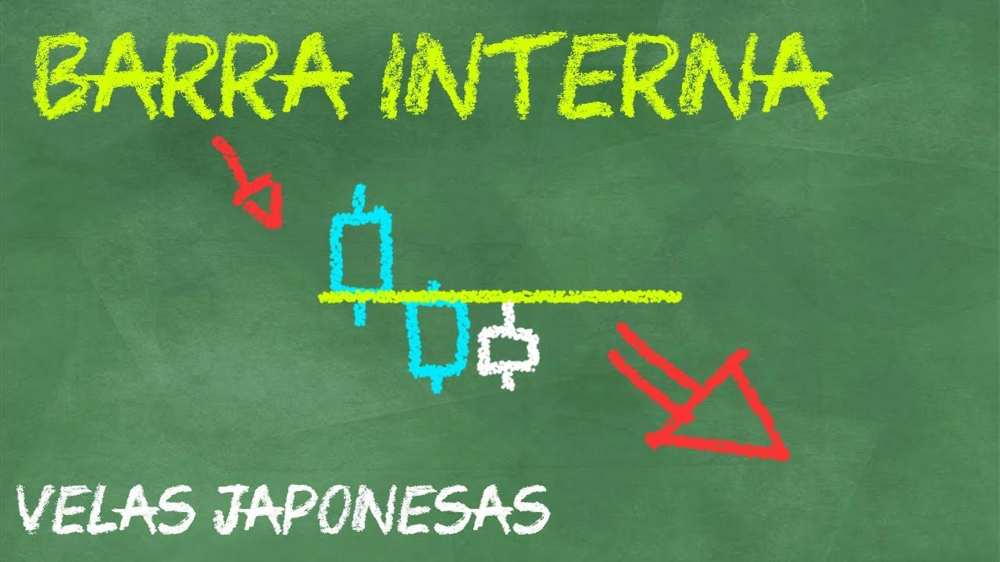

Cómo aprovechar una Barra Interna
Te acuerdas de los primeros patrones que vimos ¿cómo el Martillo y sus Variantes y el PinBar? En esta ocasión aprenderemos a operar utilizando un patrón de continuidad, La Barra Interna.
La barra interna es un patrón de vela que se encuentra dentro de la vela anterior, la vela va en dirección contraria a la tendencia que estamos analizando.
Es importante para este patrón encontrarse en una tendencia fuerte, puesto que lo que nos indica es un pequeño retroceso (pullback) o descanso de la tendencia antes de continuar.
Este patrón de vela puede llegar a confundirse con el Harami que veremos en la siguiente clase, pero cómo siempre, tenemos que tener bien a consideración el contexto donde se encuentra la vela.
De preferencia debemos apoyarnos en un nivel previamente roto, así, esta vela nos indicara el retroceso del precio a ese nivel y nos permitirá continuar operando en dirección de la tendencia mayor confianza.
A continuación explico las caracteristicas del patrón Barra Interna y cómo operarlo en Opciones Binarias.
